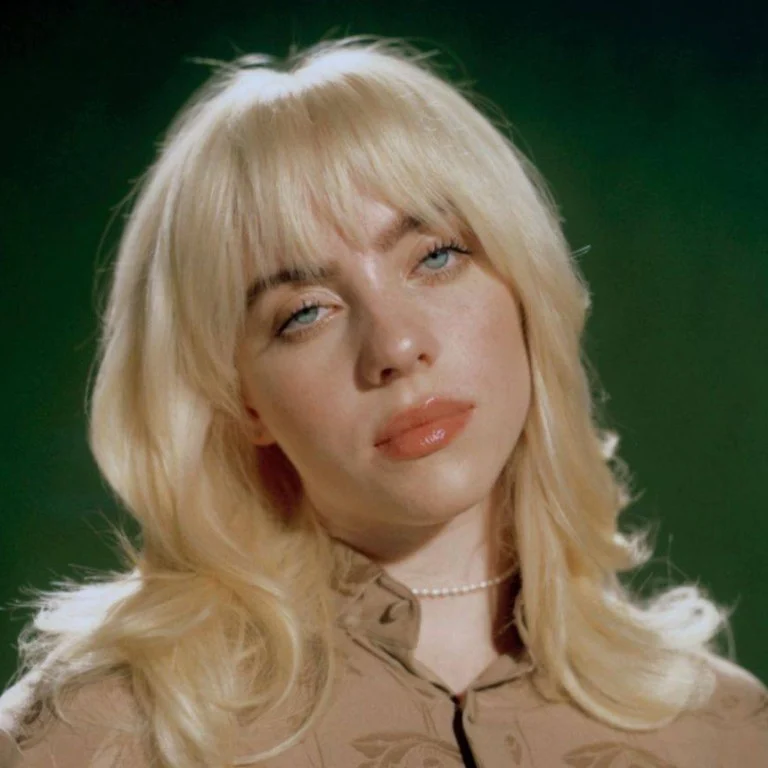

My Favorite Pop Artist
Billie Eilish

Billie Eilish is a contemporary pop artist who I've been listening to since I was a middle schooler.
She was discovered on Soundcloud after uploading a song called Ocean Eyes when she was 13 years old. Since then, she's released 4 albums.
My favorite album of hers would definitely be Hit Me Hard and Soft, which released my senior year of high school in 2024.
Some of my Favorite Songs by Billie Eilish
- BIRDS OF A FEATHER
- L'AMOUR DE MA VIE
- THE GREATEST
- CHIHIRO
- LUNCH